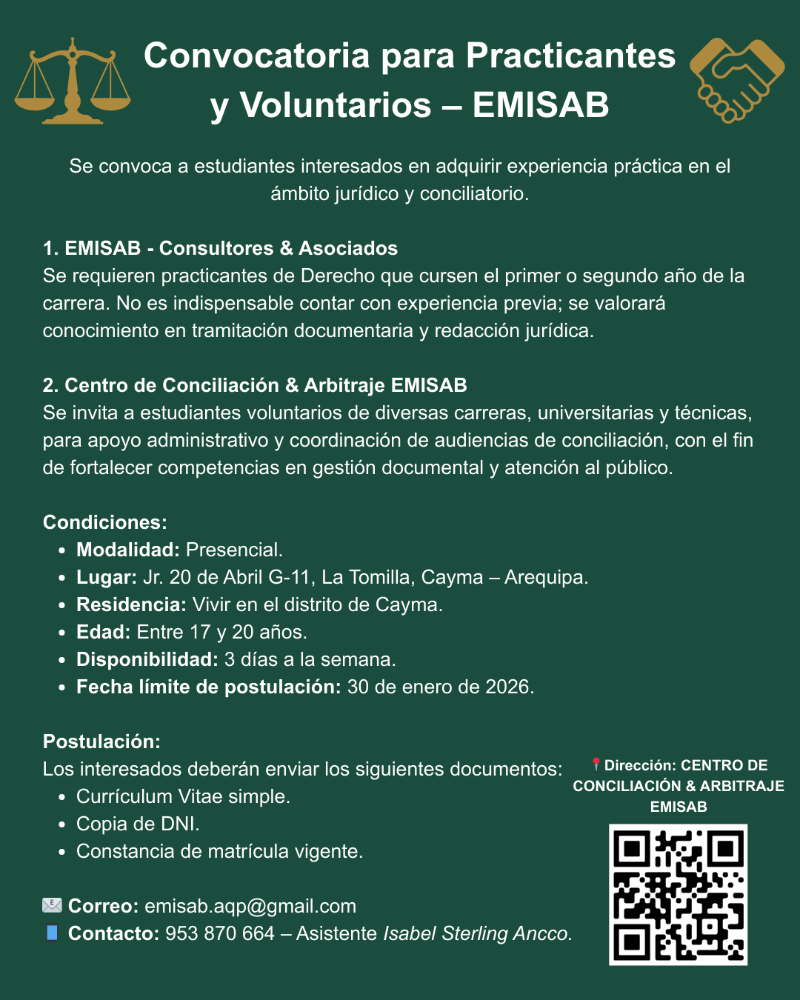

Noticias y anuncios
Entérate de nuestras últimas novedades, convocatorias y mensajes especiales.
📢 Convocatoria – Enero 2026
Publicado: Enero 2026
Se convoca a estudiantes interesados en adquirir experiencia práctica en el ámbito jurídico y conciliatorio.
- EMISAB – Consultores & Asociados: Practicantes de Derecho (1° o 2° año). Se valorará conocimiento en tramitación documentaria y redacción jurídica.
- Centro de Conciliación & Arbitraje EMISAB: Voluntarios de diversas carreras para apoyo administrativo y coordinación de audiencias.
🎁 Tarjetas navideñas EMISAB – Beneficio especial
Publicado: Enero 2026
Si recibiste esta tarjeta, recuerda que tienes posibilidad de acceder a un procedimiento gratuito en el CENTRO DE CONCILIACIÓN & ARBITRAJE EMISAB, solo en casos de común acuerdo en tenencia, régimen de visitas, pensiones de alimentos, conciliaciones en materia familiar y liquidación en sociedad de gananciales.
La condición es presentar la tarjeta que recibiste y manifestar la voluntad de llegar a un acuerdo. El beneficio solo es válido para diciembre 2025 y enero 2026.
Oferta especial en casos familiares
Publicado: Enero 2026
Durante este mes ofrecemos descuentos en procesos de conciliación relacionados con pensión de alimentos y tenencia.
🎄 ¡Feliz Navidad!
Publicado: Diciembre 2025
El Centro de Conciliación & Arbitraje EMISAB les desea unas fiestas llenas de paz y unión familiar.
📢 Convocatoria para Practicantes y Voluntarios – EMISAB
Publicado: Noviembre 2025
CONVOCATORIA CERRADA

Se convoca a estudiantes de la carrera de Derecho interesados en adquirir experiencia práctica en un entorno jurídico y conciliatorio.